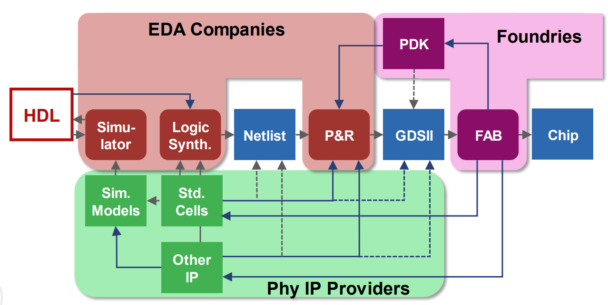
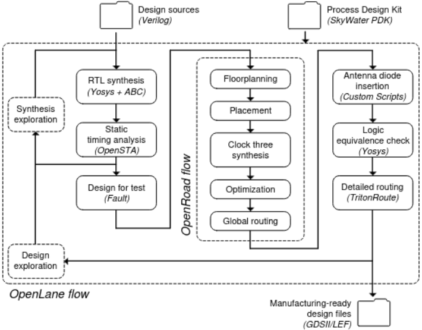
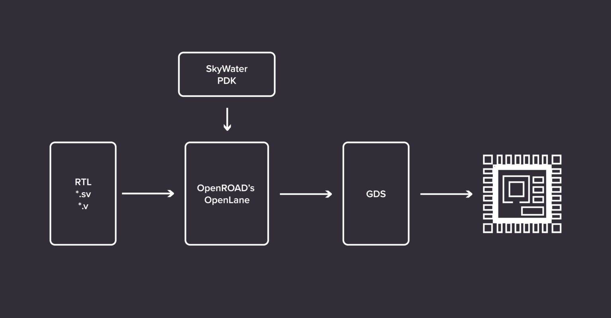
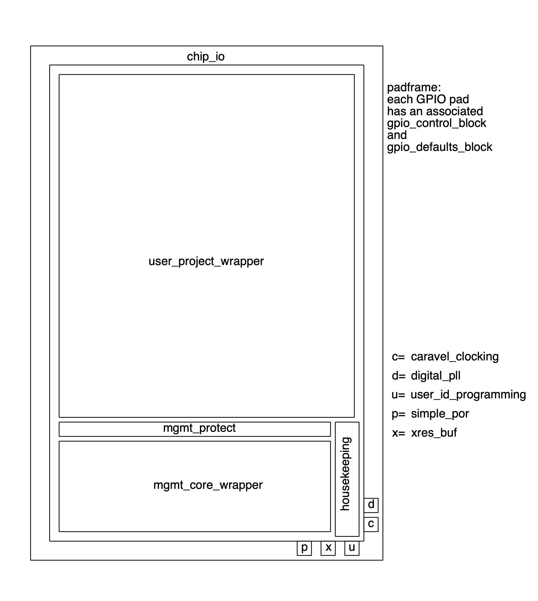

Proposal#
Project Overview#
LibreCar Control aims to democratize knowledge to control an automotive vehicle.
Nlnet funded development of Librecar Control in 2023 round.
- 2023 - details of outcome project achieved in 2023.
...
2024 Project Plans#
Until very recently, custom ASICs were very rare for small and medium companies due to the overall prohibitive cost of their production, which could only be afforded by few large companies. This high cost comes mainly from the closed source Physical IPs, very expensive commercial EDA tools used for chip designs and proprietary PDKs (Process Design Kit) by the foundries defining a certain technology variation for their chip fabrication.

However, recently there have been opensource initiatives such as OpenROAD which supported the production of a fully open source EDA toolchain from hardware description languages down to GDSII. The recent introduction of open source Process Design Kit (PDK) like 130nm BiCMOS process from IHP, SOI-CMOS PDK from Minimal Fab, 130nm mixed-signal CMOS SKY130 from Skywater and GlobalFoundries' 180nm has also opened several opportunities for circuit designers and removed the roadblocks for ASIC designing.
When the performance or timing of the system is not dependent on realtime requirements, the system is normally supplemented with FPGAs. Also FPGAs, being expensive, drive up the cost due to the inability to apply economy of scale for safety-critical domains with high volumes such as the automotive. Thus automotive target ASICs are on the rise. However all digital IPs in such ASICs are closed source and their internal working are working under non-disclosure agreements(NDA) by semiconductor vendors.
Librecar Control project intends to help opensource hardware ecosystem by taking next natural step to make opensource CAN-Bus IP available on an integrated circuit. It aims to deliver a fully open source CAN-Bus digital IP to be built into an ASIC using Skywater 130nm Open PDK. This CAN-Bus IP is already synthesized and proven in FPGA(with Litex framework) as part of NLNET 2023 funding.
Target Consumers#
The project attempts to help solve the need for open source Hardware.
Open source hardware refers to a hardware, an ASIC, or even, a circuit that has provided access to its entire design, specifications, and documentations, which can be used, altered, or distributed by anyone.
Like source code in case of open source software, all the schematics, logic designs, layout-data, and netlists need to be made available for revisions by anyone, who has access to the tools to read, manipulate and update the existing design with new features, usually aiming for better performance and share the improved design back to the community for further enhancements and evaluations.
This effort will help the opensource community in following ways:
- Access to an opensource CAN-Bus IP in ans ASIC and its entire design, specifications, and documentations.
- Knowledge how to integrate any FPGA based design to an opensource ASIC with access to all logic designs, layout-data, and netlists.
- Access to Schematic and Board Design for communicating with automotive and industrial devices.
- Enables software developers to effectively optimize their source codes based on fully accessible hardware details of CAN-Bus IP.
...
Overview#
For hardware development, we needed for a long time to rely on commercial tools to simulate circuits and synthesize them targeting FPGAs or ASICs. This has changed recently with more Opensource tools pushing open hardware movement.
Only opensource tools and methodology is planned to be used in development of this project.
For this project, we rely on below opensource tools:
- Yosys, an open source framework for RTL synthesis.
- OpenROAD, which is used in OpenLane, delivers an end-to-end silicon compiler in open source, providing an automated layout generation flow from a design in RTL to GDSII/LEF files used to produce silicon chips.

- SkyWater PDK is a catalog of standard logic cells that are designed for manufacturing at the SkyWater fab.

- Caravel project provides an already hardened harness which has a blank space of 2.920 µm × 3.520 µm left for a custom design. The harness includes a small RISC-V management core, clock management, digital IO pins, logic analyzer pins, and a Wishbone interface from the RISC-V core to the user design.
